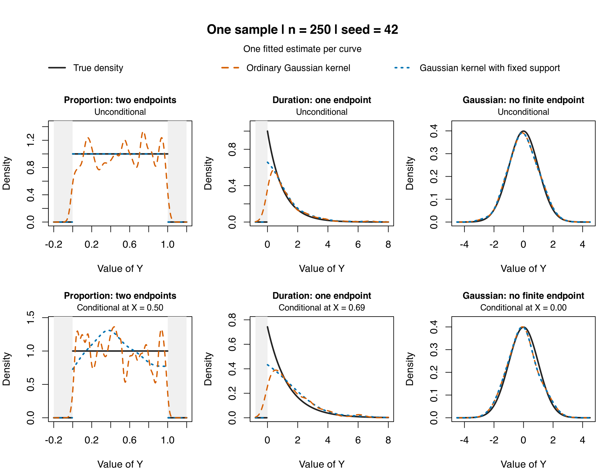

Density, Distribution, Quantiles
npudens, npudist, npcdens, npcdist, npqreg, nplsqreg, density, boundary correction, support bounds, quantile regression
The np package is useful not only for regression but also for unconditional and conditional density estimation, distribution estimation, and nonparametric quantile regression. This page collects those workflows in one place.
If you want a minimal downloadable script for the simplest density workflow, start with np_density_quickstart.R.
If you want the shortest route to conditional density or quantile workflows, start with:
- np_distribution_quickstart.R
- np_conditional_density_quickstart.R
- np_conditional_distribution_quickstart.R
- np_quantile_quickstart.R
- np_lsqreg_quickstart.R
How the four targets connect
At the population level, the conditional density, distribution, quantiles, and mean are connected:
\[ F(y\mid x)=\int_{-\infty}^{y} f(u\mid x)\,du, \qquad q_\tau(x)=\inf\{y:F(y\mid x)\geq\tau\}, \]
and
\[ E[Y\mid X=x]=\int y f(y\mid x)\,dy. \]
When the conditional distribution is continuous at the requested quantile, \(F(q_\tau(x)\mid x)=\tau\). The generalized-inverse definition remains valid when a distribution has jumps or flat regions.
These identities connect population targets; they do not say to derive one fitted object mechanically from another. npreg(), npcdens(), and npcdist() select smoothing for the conditional mean, density, and distribution targets respectively. Numerically integrating a fitted conditional-density surface therefore need not reproduce a separately optimized conditional-distribution estimate. npqreg() first selects bandwidths for the conditional-distribution target, estimates that distribution, and then inverts it at the requested \(\tau\in(0,1)\) values.
Requesting uncertainty deliberately
The fitted density, distribution, conditional, quantile, mode, and copula estimators default to se = FALSE, so ordinary point estimation does not pay for uncertainty that may never be used. Request se = TRUE when the fitted object must retain supported asymptotic standard errors, use predict(..., se.fit = TRUE) for prediction errors, and use gradients(object, se = TRUE) only after fitting with the required gradient and uncertainty state.
The public extractors read stored results; they do not launch a hidden refit. If uncertainty was omitted, reuse the fitted object’s $bws component with se = TRUE to add it without repeating bandwidth selection. Explicit asymptotic plots request the uncertainty they need.
Unconditional density and distribution: npudens and npudist
Use these when the object of interest is the joint or marginal distribution itself rather than a regression function.
The Old Faithful data remain a simple and informative illustration because the shape is not well summarized by a simple parametric family.
## Fit unconditional density and distribution objects for the same data
library(np)
data(faithful, package = "datasets")
f_faithful <- npudens(~ eruptions + waiting, data = faithful)
F_faithful <- npudist(~ eruptions + waiting, data = faithful)
summary(f_faithful)
summary(F_faithful)If you want to visualize the estimated surface, you can then plot the objects.
## Plot the fitted unconditional objects to inspect their shape
plot(f_faithful, view = "fixed", main = "")
plot(F_faithful, view = "fixed", main = "")This is a good example of why nonparametric methods can matter: a bimodal or otherwise irregular structure is much easier to reveal when you do not force a simple parametric family on the data.
Distribution bandwidth-selection support
For npudistbw(), the default do.full.integral = FALSE evaluates the CDF criterion on a fast row-aligned marginal-quantile path controlled by ngrid. In a multivariate problem this is not a Cartesian product grid. Set do.full.integral = TRUE when you specifically want the empirical joint support and can accept the additional cost, or supply gdat for a chosen evaluation cloud or grid.
The bwmethod = "normal-reference" route is a fast Silverman-style rule-of-thumb for exploratory work. It is not a production substitute for cross-validation or likelihood-based bandwidth selection, and categorical coordinates receive zero smoothing under that rule.
Conditional density and distribution: npcdens and npcdist
Use these when the full conditional distribution matters, not just the conditional mean.
The GDP panel example remains helpful because the conditional distribution changes shape over time.
## Fit conditional density and distribution objects given the covariate
library(np)
data(Italy, package = "np")
fhat <- npcdens(gdp ~ year, data = Italy)
Fhat <- npcdist(gdp ~ year, data = Italy)
summary(fhat)
summary(Fhat)Plots can then be used to inspect the evolving conditional density and conditional distribution.
## Plot the evolving conditional density and distribution surfaces
plot(fhat, view = "fixed", main = "")
plot(Fhat, view = "fixed", main = "")This route is especially useful when the question is not simply whether the mean changes, but whether the entire distribution changes.
Choosing support bounds
Before estimating a density, consider which values the variable can take. A proportion has two finite endpoints; a positive duration has a lower endpoint but need not have a finite upper endpoint. Supply endpoints known from the application, in the same units as the data.
| What is known about the support? | Unconditional density arguments | Practical interpretation |
|---|---|---|
| Both endpoints, such as a proportion in \([0,1]\) | ckerbound = "fixed", ckerlb = 0, ckerub = 1 |
Use both known endpoints. |
| A lower endpoint only, such as a duration in \([0,\infty)\) | ckerbound = "fixed", ckerlb = 0, ckerub = Inf |
The largest observed duration is not an upper bound. |
| An upper endpoint only, say \(b\) | ckerbound = "fixed", ckerlb = -Inf, ckerub = b |
Leave the unknown or infinite lower endpoint unrestricted. |
| Finite endpoints exist but are unknown | ckerbound = "range" |
Use the sample minimum and maximum as proxies; examine sensitivity to the support choice. |
| No finite endpoints, such as a Gaussian variable | Omit the boundary arguments | A finite sample range does not establish bounded support. |
For conditional density estimation, use cxkerbound, cxkerlb, and cxkerub for the predictors, and cykerbound, cykerlb, and cykerub for the responses. Make the support decision separately for each side. For example, a duration response with an unrestricted predictor calls for the cyker* arguments only. "range" is a modeling choice about finite support, not an automatic way to decide whether a boundary exists. Prefer known endpoints when they are available.
A one-sample illustration
The three columns below compare a proportion, a positive duration, and an unbounded Gaussian variable. Each comparison uses the same sample of 250 observations, seed 42, the default second-order Gaussian kernel, and separately selected likelihood cross-validation bandwidths. The only change is the support information supplied to the estimator.

Near a genuine endpoint, an ordinary symmetric kernel assigns mass outside the support. The bounded Gaussian kernel adjusts for the kernel mass remaining inside it. This reduces the leading endpoint distortion, although smoothing bias remains. Support correction is distinct from proper = TRUE, which is a separate optional post-estimation correction for conditional density and distribution output.
Download np_density_bounds_quickstart.R to generate all six fits and the figure and to check the infinite-bounds control.
## Known support bounds with the default Gaussian kernel (np 0.80-1).
## Source this file to fit and plot all six seed-42 examples.
## Save the plot with:
## png("density_bounds.png", width = 1800, height = 1400, res = 180)
## plot_density_bounds(bounds_examples, main = "One sample | n = 250 | seed = 42")
## dev.off()
## The separate 100-draw Gallery averages are not run by this quickstart.
library(np)
options(np.messages = FALSE)
RNGkind("Mersenne-Twister", "Inversion", "Rejection")
n <- 250L
seed <- 42L
search_seed <- 100000L + seed
designs <- c("proportion", "duration", "gaussian")
bounds_examples <- list()
for (design in designs) {
bounds <- switch(design, proportion = c(0, 1),
duration = c(0, Inf), gaussian = c(-Inf, Inf))
yy <- switch(design, proportion = seq(-.2, 1.2, length.out = 281),
duration = seq(-.8, 8, length.out = 221),
gaussian = seq(-4.5, 4.5, length.out = 201))
inside <- yy >= bounds[1] & yy <= bounds[2]
## Unconditional: the same sample, separate CVML bandwidth searches.
set.seed(seed)
y <- switch(design, proportion = runif(n),
duration = rexp(n), gaussian = rnorm(n))
set.seed(search_seed); npseed(search_seed)
b0 <- npudensbw(dat = data.frame(y), bwmethod = "cv.ml", nmulti = 5)
set.seed(search_seed); npseed(search_seed)
b1 <- npudensbw(dat = data.frame(y), bwmethod = "cv.ml", nmulti = 5,
ckerbound = "fixed", ckerlb = bounds[1], ckerub = bounds[2])
u0 <- fitted(npudens(bws = b0, tdat = data.frame(y), edat = data.frame(y = yy)))
## Public evaluation is inside the declared support. Zero extension is
## an explicit plotting convention; no in-support estimates are changed.
u1 <- numeric(length(yy))
u1[inside] <- fitted(npudens(bws = b1, tdat = data.frame(y),
edat = data.frame(y = yy[inside])))
tu <- switch(design, proportion = dunif(yy),
duration = dexp(yy), gaussian = dnorm(yy))
## Conditional: one continuous X and one continuous Y, default LC.
set.seed(seed)
x <- switch(design, proportion = runif(n),
duration = rexp(n), gaussian = rnorm(n))
y <- switch(design,
proportion = {a <- .8 * (2*x - 1); u <- runif(n)
2*u / ((1-a) + sqrt((1-a)^2 + 4*a*u))},
duration = rexp(n, rate = 1 / (1 + .5*x)),
gaussian = rnorm(n, mean = x))
## Display the conditional density at the population median of X.
x0 <- switch(design, proportion = .5, duration = qexp(.5), gaussian = 0)
grid <- data.frame(x = rep(x0, length(yy)), y = yy)
set.seed(search_seed); npseed(search_seed)
b0c <- npcdensbw(xdat = data.frame(x), ydat = data.frame(y),
bwmethod = "cv.ml", nmulti = 5)
set.seed(search_seed); npseed(search_seed)
b1c <- npcdensbw(xdat = data.frame(x), ydat = data.frame(y),
bwmethod = "cv.ml", nmulti = 5,
cxkerbound = "fixed", cxkerlb = bounds[1], cxkerub = bounds[2],
cykerbound = "fixed", cykerlb = bounds[1], cykerub = bounds[2])
c0 <- fitted(npcdens(bws = b0c, txdat = data.frame(x), tydat = data.frame(y),
exdat = grid["x"], eydat = grid["y"], proper = FALSE))
c1 <- numeric(length(yy))
c1[inside] <- fitted(npcdens(bws = b1c, txdat = data.frame(x), tydat = data.frame(y),
exdat = grid[inside, "x", drop = FALSE],
eydat = grid[inside, "y", drop = FALSE], proper = FALSE))
tc <- switch(design,
proportion = (1 + .8*(2*x0 - 1)*(2*yy - 1)) * inside,
duration = dexp(yy, rate = 1 / (1 + .5*x0)), gaussian = dnorm(yy, mean = x0))
if (design == "gaussian") {
## Test the estimator separately from bandwidth-search rounding.
same <- npcdens(bws = c(b0c$ybw, b0c$xbw),
txdat = data.frame(x), tydat = data.frame(y),
exdat = grid["x"], eydat = grid["y"], proper = FALSE,
cxkerbound = "fixed", cxkerlb = -Inf, cxkerub = Inf,
cykerbound = "fixed", cykerlb = -Inf, cykerub = Inf)
stopifnot(identical(u0, u1), identical(c0, fitted(same)))
print(c(unconditional_difference = max(abs(u0 - u1)),
conditional_same_bandwidth = max(abs(c0 - fitted(same))),
conditional_separate_cvml = max(abs(c0 - c1))))
}
bounds_examples[[design]] <- list(y = yy, bounds = bounds, x0 = x0,
unconditional = data.frame(truth = tu, ordinary = u0, fixed = u1),
conditional = data.frame(truth = tc, ordinary = c0, fixed = c1))
}
plot_density_bounds <- function(examples, main = "One sample",
subtitle = "One fitted estimate per curve",
ylimits = NULL) {
op <- par(no.readonly = TRUE)
on.exit(par(op))
par(mfrow = c(2, 3), cex = 1, mar = c(4, 4, 3.5, .8), oma = c(0, 0, 6.5, 0))
cols <- c("#222222", "#D55E00", "#0072B2")
titles <- c(proportion = "Proportion: two endpoints",
duration = "Duration: one endpoint", gaussian = "Gaussian: no finite endpoint")
for (family in c("unconditional", "conditional")) for (design in names(examples)) {
z <- examples[[design]]; v <- z[[family]]
inside <- z$y >= z$bounds[1] & z$y <= z$bounds[2]
ylim <- if (is.null(ylimits)) c(0, max(v)*1.07) else ylimits[[family]][[design]]
plot(z$y, v$truth, type = "n", ylim = ylim,
xlab = "Value of Y", ylab = "Density", main = titles[design], cex.main = .9)
mtext(if (family == "unconditional") "Unconditional" else
sprintf("Conditional at X = %.2f", z$x0), side = 3, line = .3, cex = .85)
if (is.finite(z$bounds[1])) rect(min(z$y), 0, z$bounds[1], par("usr")[4],
col = "#F0F0F0", border = NA)
if (is.finite(z$bounds[2])) rect(z$bounds[2], 0, max(z$y), par("usr")[4],
col = "#F0F0F0", border = NA)
## Break at support endpoints rather than draw a spurious sloping join.
for (ix in split(seq_along(z$y), cumsum(c(TRUE, diff(inside) != 0)))) {
lines(z$y[ix], v$truth[ix], col = cols[1], lwd = 2.4)
lines(z$y[ix], v$fixed[ix], col = cols[3], lwd = 2.4, lty = 3)
}
lines(z$y, v$ordinary, col = cols[2], lwd = 2, lty = 2)
if (design == "gaussian") lines(z$y, v$fixed, col = cols[3], lwd = 2.4, lty = 3)
}
mtext(main, side = 3, outer = TRUE, line = 3.5, font = 2, cex = 1.25)
mtext(subtitle, side = 3, outer = TRUE, line = 2, cex = .9)
top <- par("omi")[3] / par("din")[2]
par(fig = c(0, 1, 1-top, 1), new = TRUE, mar = rep(0, 4), oma = rep(0, 4))
plot.new()
legend("bottom", c("True density", "Ordinary Gaussian kernel", "Gaussian kernel with fixed support"),
col = cols, lty = c(1, 2, 3), lwd = 2.4, bty = "n", horiz = TRUE, cex = .9)
}
plot_density_bounds(bounds_examples, main = sprintf("One sample | n = %d | seed = %d", n, seed))For the full simulation designs, repeated-sample figures, MISE comparisons, and selector-level qualifications, continue to Boundary-Aware Density Estimation.
Numerical and uncertainty updates in 0.80-1
Conditional density and distribution level plots can now construct bootstrap intervals when the continuous response and predictor sides use different kernel families or orders, including beta kernels on either side. Beta-density bandwidth selection also supports mixed continuous, unordered, and ordered data for CVML and bounded target-quadrature CVLS with fixed, generalized nearest-neighbour, or adaptive nearest-neighbour bandwidths and beta orders 2, 4, 6, and 8.
For positive-degree local-polynomial fits, categorical gradients and effects report fitted-value endpoint contrasts rather than zero placeholders. Local-linear and positive-degree local-polynomial conditional density, distribution, and quantile fits also provide requested paired categorical-contrast standard errors where the required influence is smooth and finite; unsupported cases remain explicit NA values.
Requested adaptive-nearest-neighbour uncertainty for unconditional density and distribution fits accounts for donor-specific radii on qualified regular interior ranks. Fixed-bandwidth copula-density uncertainty includes the joint covariance with its marginal density estimates. Unqualified boundary or degenerate cases retain their point estimates and report unavailable standard errors rather than silently applying a different formula.
Ordered distribution estimates use the corrected Wang–van Ryzin cumulative upper tail. Readers reproducing results from an earlier release should expect affected ordered-CDF estimates and cross-validation values to change.
Scaled bandwidth objects now supply their retained physical bandwidths consistently to fitted, operator, uncertainty, and copula routes. Corrected deleted-sample geometry for affected beta and bounded-kernel nearest-neighbour criteria can likewise change selected bandwidths. Those correctness fixes are confined to the affected routes, and some of the corrected searches require more work than the former criteria.
Practitioner-oriented extras
Some applied tasks are a little different from the standard “fit and inspect” workflow. The Cambridge practitioner material suggests three especially useful ones:
- estimate a smooth probability function on discrete support,
- draw a smooth resample from a fitted unconditional density,
- draw a smooth resample from a fitted conditional density.
The first of these is compact enough to show inline.
Source file: np_probability_quickstart.R
## Minimal np smooth-probability example.
##
## This is a compact route for estimating a smooth probability function
## on unordered discrete support.
library(np)
options(np.messages = FALSE)
## Simulate a small unordered outcome with three support points.
set.seed(42)
X <- factor(sample(0:2, 100, replace = TRUE, prob = c(0.25, 0.45, 0.30)))
## Fit the smooth probability object using the unordered kernel.
fit <- npudens(~ X, ukertype = "aitchisonaitken", bwmethod = "cv.ml")
## Inspect the fitted object, then recover one fitted probability per class.
summary(fit)
tapply(fitted(fit), X, mean)Additional practitioner scripts:
Copulas: npcopula
If the main object of interest is the dependence structure itself rather than a regression function, npcopula is the natural route.
The formula interface is now the streamlined first stop: when bws is not supplied, npcopula() automatically builds the required npudistbw() bandwidth object for the default copula target, or npudensbw() when target = "density". For the default two-dimensional grid workflow, omitting u also triggers automatic construction of a probability grid.
Source file: np_copula_quickstart.R
## Minimal np copula example.
##
## This uses the direct formula interface and lets npcopula() build
## the corresponding marginal distribution bandwidth object internally.
library(np)
library(MASS)
set.seed(42)
n <- 1000
rho <- 0.95
Sigma <- matrix(c(1, rho, rho, 1), 2, 2)
## Simulate a simple bivariate sample with strong dependence.
dat <- as.data.frame(mvrnorm(n = n, mu = c(0, 0), Sigma = Sigma))
names(dat) <- c("x", "y")
## Let npcopula() create a small default probability grid.
copula_fit <- npcopula(~ x + y, data = dat, neval = 20)
## Inspect the fitted copula object and the retained bandwidth object.
summary(copula_fit)
summary(copula_fit$bws)
## Evaluate on a small Cartesian grid of marginal probability coordinates.
u_eval <- list(u1 = c(0.25, 0.50, 0.75),
u2 = c(0.25, 0.50, 0.75))
predict(copula_fit, u = u_eval)The fitted object retains its public bandwidth state in copula_fit$bws. Copula prediction is expressed in marginal probability coordinates, not in raw data on the original variable scale:
## Evaluate the fitted copula on a small Cartesian probability grid
u_eval <- list(u1 = c(0.25, 0.50, 0.75),
u2 = c(0.25, 0.50, 0.75))
predict(copula_fit, u = u_eval)The compatibility newdata route also expects columns named u1, u2, and so on; it does not transform raw x and y values into probability coordinates. For higher-dimensional copulas, provide u explicitly or use evaluation = "sample" rather than asking for an exponentially growing automatic grid.
Set neval when constructing npcopula() if you want a different automatic grid size. It is not a post-fit plotting control: plot.npcopula() rejects neval, while a custom fitted grid can be supplied through u at construction.
For LP-capable conditional families, the same modern shortcut is now available:
## nomad = "auto" uses exhaustive search for p = 1 and NOMAD otherwise.
fhat_lp <- npcdens(eruptions ~ waiting, data = dat, nomad = "auto", nmulti = 1)
Fhat_lp <- npcdist(eruptions ~ waiting, data = dat, nomad = "auto", nmulti = 1)That is the convenience route for automatic local-polynomial degree and bandwidth search in a single call. As with regression, it requires the crs package because NOMAD degree search is provided there.
When the local-polynomial degree is above zero, proper = TRUE is also available in the npc* calls and related plot routes. This enforces proper conditional density/distribution output in the practical sense used here: non-negative and integrating to one conditional on x.
The same local-polynomial extensions now also broaden derivative support across the conditional family. In practice, that means conditional density, conditional distribution, conditional quantile, and related fitted objects can now expose richer gradient and higher-order derivative routes whenever the selected polynomial degree is high enough to support them.
Nonparametric quantile regression: npqreg
Use npqreg when your interest lies in conditional quantiles rather than means.
The direct formula interface is now the natural first stop. When bws is not supplied, npqreg() automatically calls npcdistbw() internally to select bandwidths for the conditional-distribution target. It then estimates that distribution and inverts it at the requested \(\tau\in(0,1)\) values. Bandwidth-selection options supplied to npqreg() are passed through to the internal npcdistbw() call, so you can still control the underlying conditional-distribution fit without breaking the high-level workflow.
## Extract several quantiles from one selected conditional-distribution fit
library(np)
data(Italy, package = "np")
qfit <- npqreg(gdp ~ ordered(year),
data = Italy,
tau = c(0.25, 0.50, 0.75))Then compare the fitted quantiles:
## Overlay the fitted conditional quantiles
plot(qfit)If you later want to reuse the selected bandwidths for additional quantiles without recomputing cross-validation, you still can. Call npqreg() when you need the fitted values as an object, or pass tau directly to plot() when graphical inspection is all you need:
qmed <- npqreg(gdp ~ ordered(year), data = Italy, tau = 0.50)
qfit <- npqreg(bws = qmed$bws, tau = c(0.25, 0.50, 0.75))
plot(qfit)
## Or, if plotting is the only goal:
plot(qmed, tau = c(0.25, 0.50, 0.75))If you want derivative information, request it in the fit:
qgrad <- npqreg(gdp ~ ordered(year),
data = Italy,
tau = 0.50,
gradients = TRUE)
plot(qgrad, gradients = TRUE)The same formula interface can also use the automatic local-polynomial degree-and-bandwidth search when the conditioning data include at least one continuous variable:
Italy$year_numeric <- as.numeric(as.character(Italy$year))
qfit_lp <- npqreg(gdp ~ year_numeric,
data = Italy,
tau = c(0.25, 0.50, 0.75),
## nomad = "auto" uses exhaustive search for p = 1 and NOMAD otherwise.
nomad = "auto")This is a good example of the intended progression: start with the direct high-level route, then reuse the retained bandwidth object only when you specifically want to avoid recomputing it.
Conditional quantile inversion requires a monotone dependent-variable CDF. Accordingly, npqreg supports cykerorder = 2 for this route and rejects higher-order dependent-variable CDF kernels, which can be nonmonotone.
Location-scale quantile regression: nplsqreg
Use nplsqreg when you want a location-scale conditional quantile route rather than direct inversion of a fitted conditional distribution.
The user-facing workflow is meant to feel just as natural as npqreg. When bws is omitted, nplsqreg() calls nplsqregbw() internally to select the underlying bandwidths and location-scale shift state. You still retain the selected bandwidth object for exact reuse, but the normal first stop is the high-level formula interface.
Source file: np_lsqreg_quickstart.R
## Minimal np location-scale quantile example.
##
## Fit several location-scale quantiles in one call, then inspect the
## selected bandwidth state and compare the fitted curves.
library(np)
options(np.messages = FALSE)
## Keep the first location-scale run compact and reproducible.
data(Italy, package = "np")
## Fit several conditional quantiles using the location-scale route.
qfit <- nplsqreg(gdp ~ ordered(year),
data = Italy,
tau = c(0.25, 0.50, 0.75),
nmulti = 1)
## Review the selected search state and fitted object.
summary(qfit$bws)
summary(qfit)
## Predict the stored median without repeating bandwidth selection.
qmed <- predict(qfit, tau = 0.50)
head(qmed)
## Plot the fitted location-scale quantile curves.
plot(qfit)For a vector-tau fit, predict(qfit, tau = ...) can select one or more stored quantiles without repeating bandwidth selection or location-scale calibration. Several values are returned in the requested order, with standard errors and training scores kept aligned when se.fit = TRUE. A value that was not fitted is rejected explicitly; fit that quantile first rather than asking prediction to create new model state.
If you later want to reuse the selected state for a specific quantile without rerunning the full search, the retained bws object supports that directly:
## Reuse an exact location-scale bandwidth object for one fitted tau
qmed <- nplsqreg(gdp ~ ordered(year), data = Italy, tau = 0.50)
qfit <- nplsqreg(bws = qmed$bws, tau = 0.50)
plot(qfit)As with the other LP-capable conditional families, nomad = "auto" can also be used on supported continuous-data routes when you want automatic degree-and-bandwidth search in the same high-level call. For nplsqreg, a one-dimensional smoothing problem evaluates the complete requested degree lattice and jointly optimizes the bandwidth and delta at each degree; higher-dimensional problems use the NOMAD/Powell policy.
For vector tau, the location-scale fits are estimated independently. Their asymptotic standard errors are conditional on the selected bandwidths, pilot scale, and shift state, and the fitted quantile curves are not monotonized, so finite-sample crossing is possible.
When should I use these instead of regression?
| If you want… | Start with |
|---|---|
| A regression function or conditional mean | npreg |
| An unconditional density or distribution | npudens, npudist |
| A conditional density or conditional distribution | npcdens, npcdist |
| Conditional quantiles | npqreg |
| Location-scale conditional quantiles | nplsqreg |
Practical advice
- density and conditional-density workflows can be computationally heavier than users expect,
- use explicit bandwidth objects when reusing the same structure across multiple fits,
- plots are often the most informative part of the workflow,
- if the run becomes expensive and the workflow is stable, that may be a reason to move to
npRmpi.